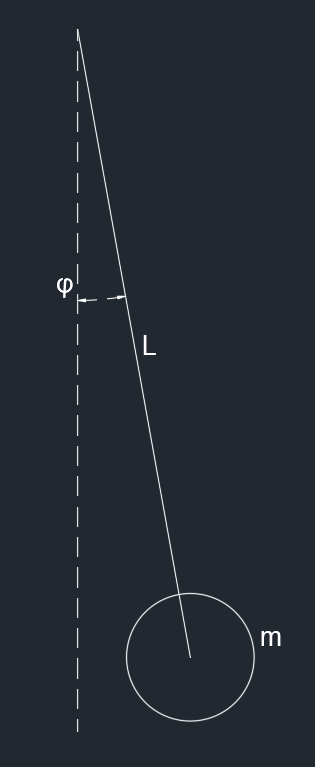
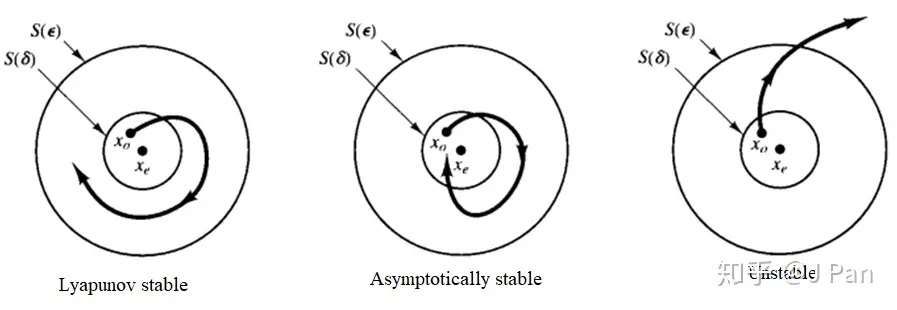

系统的稳定性
Table of Contents
稳定性：系统在离开平衡点之后的动态反应随时间不增加
函数的一些知识
PD 正定
- $V(x)=0\ if\ and\ only\ if\ x=0$
- $V(x)>0\ if\ and\ only\ if\ x\neq 0$
PSD 半正定
- $V(x)=0\ if\ and\ only\ if\ x=0$
- $V(x)\geq0\ if\ and\ only\ if\ x\neq 0$
ND 负定
- $V(x)=0\ if\ and\ only\ if\ x=0$
- $V(x)<0\ if\ and\ only\ if\ x\neq 0$
NSD 半负定
- $V(x)=0\ if\ and\ only\ if\ x=0$
- $V(x)\leq0\ if\ and\ only\ if\ x\neq 0$
平衡点
对于一个函数满足
$$ \dot{x}=f(x)\\f(x=0)=0\\\downarrow\\\dot{x}_{x=0}=0 $$那就说这个 $x=0$ 点是该函数的一个平衡点
如果此时的函数 V 满足
$$ V:PD\\\dot{V}:NSD\\\downarrow\\x=0是稳定点 $$$$ V:PD\\\dot{V}:ND\\\downarrow\\x=0是渐进稳定点 $$李雅普诺夫函数的导数
对于一个系统来说，设定
$$ \dot{x}_1=f_1\\\dot{x}_2=f_2\\V=x_1^2+x_2^2 $$可以得到
$$ \dot{V}=\begin{bmatrix}\frac{\partial V}{\partial x_1}&\frac{\partial V}{\partial x_2}\end{bmatrix}\begin{bmatrix}f_1\\f_2\end{bmatrix}=\triangledown V f(x)=L_fV(x) $$这个就是李雅普诺夫函数的导数
例子
对于一个简单的倒立摆

可以知道系统状态方程是
$$ L\ddot{\phi}+gsin\phi=0 $$设
$$ x_1=\phi\\x_2=\dot{\phi} $$得到
$$ \dot{x}_1=x_2\\\dot{x}_2=-\frac{g}{L}sinx_1 $$寻找李雅普诺夫函数，可以使用能量方程
$$ E=K动能+P势能\\=\frac{1}{2}mv^2+mgh=\frac{1}{2}m(L\dot{\phi})^2+mgL(1-cos\phi) $$所以得到李雅普诺夫函数
$$ V(x)=\frac{1}{2}m(Lx_2)^2+mgL(1-cosx_1) $$开始分析，看得出来
$$ V(0)=0 $$并且，对于任意 $x_1,x_2$，可以得到
$$ V(x)>0 $$是满足正定条件的
求导得到
$$ \dot{V}=\triangledown V f(x)=\begin{bmatrix}\frac{\partial V}{\partial x_1}&\frac{\partial V}{\partial x_2}\end{bmatrix}\begin{bmatrix}f_1\\f_2\end{bmatrix}=\begin{bmatrix}mgLsinx_1&mL^2x_2\end{bmatrix}\begin{bmatrix}x_2\\-\frac{g}{L}sinx_1\end{bmatrix}=0 $$所以满足半负定
$$ \dot{V}=0\leq 0 $$所以这个系统稳定，并且 $\dot{V}=0$ 表明这个系统能量不变
当引入阻力之后，可以得到
$$ mL\ddot{\phi}=-mgsin\dot{\phi}-kL\dot{\phi}\\V(x)=\frac{1}{2}m(Lx_2)^2+mgL(1-cosx_1)\\\dot{V}(x)=-kL^2x_2^2 $$在这里出现一个很离谱的情况，也就是 $\dot{V}(x)$ 在 $\begin{bmatrix}x_1&0\end{bmatrix}$ 处总是为 0 的，这导致该函数并不是一个负定的，而是一个半负定系统。
这个系统是一个稳定系统，不是一个渐进稳定系统
李雅普诺夫稳定性
主要是用来判断一个系统是否能稳定
平衡点
一个控制系统最重要的问题就是稳定性的问题。稳定性就是一个系统在收到扰动之后能否有能力在平衡状态继续工作。平衡点就是系统状态不再发生状态的点，可能不止一个，也可能很脆弱稍微有点扰动就不再平衡了。实际上系统状态稳定的点应该是导数为0的点，也就是让系统状态方程的所有状态的导数为0，即变化率为0。
李雅普诺夫稳定
-
如果平衡状态受到扰动之后，仍然停留在平衡状态点附近，即该平衡点在李雅普诺夫意义下是稳定的
-
如果平衡状态受到扰动之后，最终都会收敛到该平衡点处，即该平衡点在李雅普诺夫意义下是渐进稳定的
-
如果平衡状态受到任何扰动之后最终都会收敛到该平衡点处时，即该平衡点咋子李雅普诺夫意义下是大范围渐进稳定的
-
如果平衡状态受到某种扰动之后状态开始偏离平衡点，就称该点在李雅普诺夫意义下是不稳定的

李雅普诺夫第一法
需要将非线性系统在平衡态附近线性化，然后讨论线性化系统的特征值分布来研究原非线性系统的稳定性问题。称之为间接法
需要求解微分方程才能证明
李雅普诺夫第二法
稳定的系统能量总是不断被耗散的，李雅普诺夫通过定义一个标量函数 $V(x)$（通常能代表广义能量）来分析稳定性。这种方法的避免了直接求解方程，也没有进行近似线性化，所以也一般称之为直接法。
如果该标量函数满足：
- $V(x)=0\ if\ and\ only\ if\ x=0$
- $V(x)>0\ if\ and\ only\ if\ x\neq 0$
- $\dot{V(x)}=\frac{d}{dt}V(x)=\sum_{i=1}^{n}\frac{\partial V}{\partial x_i}f(x_i) \leq 0\ when\ x\neq 0$
则该系统在李雅普诺夫意义下是稳定的，特别的，当 $\dot{V(x)}<0$ 则该系统是渐进稳定的
优点
在判断一个系统稳定性方面很有用。
缺点
很多时候李亚普诺夫函数是凭着经验的猜测。对于一个陌生的控制系统很难构建一个李亚普诺夫函数去证明这个系统的稳定性
对于一个线性时不变系统 LTI
| 稳定性 | λ=a+bi |
|---|---|
| 李雅普诺夫稳定性 | 所有特征值只有非正的实部 |
| 渐进稳定性 | 所有特征值只有负的实部 |
| 不稳定 | 所有特征值有正的实部 |